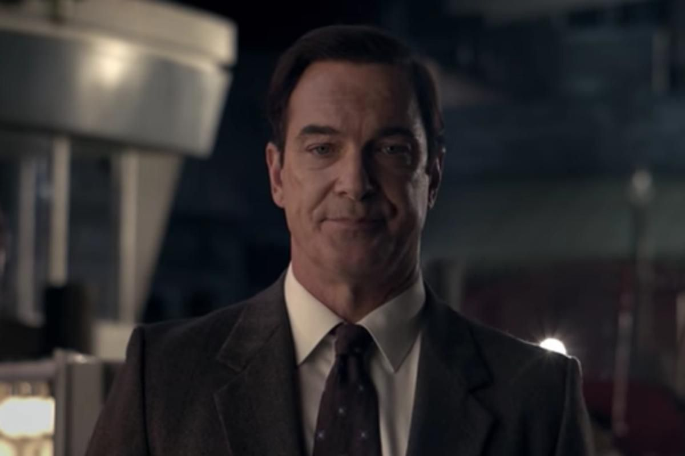

"Si estáis interesados en historias con un final feliz, será mejor que leáis otro libro. En este, no solo no hay final feliz, sino que tampoco hay un principio feliz y muy pocos sucesos felices en medio. Es así porque no sucedieron demasiadas cosas felices en las vidas de los tres jovencitos Baudelaire. Violet, Klaus y Sunny Baudelaire eran niños inteligentes, y eran encantadores e ingeniosos, y tenían unas facciones agradables, pero eran extremadamente desafortunados, y la mayoría de las cosas que les ocurrieron estaban llenas de infortunio, miseria y desesperación. Siento tener que decíroslo, pero así transcurre la historia."
Narración de Lemony Snicket al principio de Un mal Principio.
Lemony Snicket es un ex-miembro de la organización V.F.D., ex-pareja de Beatrice Baudelaire - madre de los hermanos Baudelaire - hermano de Jacques Snicket e investigador de los eventos desafortunados de las vidas de los Baudelaire.
Se sabe poco o nada de la vida de Lemony y algunos detalles de esta se presentan en su biografia al final de cada libro de la serie, esto, mas una carta a su editor, revelandole donde se encuentra la información importante para poder públicar el siguiente libro de Una Serie de Eventos Desafortunados y un adelanto de cada libro posterior, esto dependiendo de la editorial que publique cada libro.
Por lo que se sabe, Lemony Snicket crecio en un pueblecito frente al mar donde todos eran desconfiados y propensos a causar disturbios, luego se convirtio en un investigador recolectando pruebas de los desafortunados sucesos de las vidas de los Baudelaire, las autoridades lo consideraban un experto, sin embargo, Lemony siempre se movía de un lugar a otro, debido a que fue acusado de provocar incendios, acusacion totalmente falsa, mientras escapaba, Lemony escribia las historias de los Baudelaire, en base a la información que recolectaba.
Lemony empezo a investigar desde muy temprana edad, con 13 años se convirtio en aprendiz de detective e investigo algunos casos como se explica en la saga de Preguntas Equivocadas, que se compone por ¿Quien será a estas horas?, ¿Cuando la vió por última vez?, ¿No deberías estar en la escuela? y ¿Por que esta noche es diferente de todas las otras noches?.
Lemony se unió junto con su hermano Jacques a la organización V.F.D y probablemente allí haya conocido a Beatrice y a quien sería su futuro esposo, Bertrand Baudelaire, ademas de conocer a quien causaria los infortunios de los futuros hijos de Bertrand y Beatrice, El Conde Olaf. Lemony y Beatrice tuvieron un relación romantica, que pudo terminar en un casamiento y la formación de una familia de no ser por el hecho de que Beatrice creyo que Lemony había muerto y se caso con Bertrand y ambos tuvieron a Violet, Klaus y Sunny, sin embargo, Bertrand y Beatrice fallecieron en un misterioso incendio que consumió tanto sus vidas como su casa, dejando huerfanos a los Baudelaire. Es por esto, que al principio de cada libro, Lemony siempre deja una dedicatoria a su amada Beatrice, sabiendo que nunca pudieron estar juntos.
Varios detalles mas de la vida de Lemony se revelan en Lemony Snicket: La Autobiografia No Autorizada y 13 secretos impactantes de Lemony Snicket.
Lemony Snicket se presenta como alguien inteligente, pero a la vez serio y muy, muy, muy pesimista, llegando a veces a rendirse en las peores situaciones, incluyendo los eventos desafortunados de las vidas de los Baudelaire, mencionando que si se encuentra en su situación se rendiria facilmente, creyendo que no hay esperanza.
A Lemony Snicket nunca se le alegre, por lo cual, nunca lo verás sonriendo, o mencionando que estaba sonriendo, esto le pasa incluso desde muy joven
El pesimismo de Lemony es tan grande, que en su persecusión por los crimenes que no cometió, aunque no se rinde facilmente e intenta demostrar su inocencia, a veces llega al punto donde pierde la esperanza de que las cosas resulten bien, tanto para el, como para las demas personas. Sin embargo, este pesimismo tambien le hace dar cuenta de lo cruel que puede ser el mundo, como cuando murió Beatrice, ya que el lo acepto con madurez y tristeza supo que la vida no siempre tiene un final incluso cuando ya se esta muerto, ya que El Conde Olaf fue tras sus hijos.
La apariencia física de Lemony Snicket es en sí un misterio, pues el nunca se ha descrito físicamente, ni siquiera cuando el es el protagonista de su propia historia en la saga de Preguntas Equivocadas, esto lo complican más las fotos y las ilustraciones, ya que en estas a Lemony siempre se le ve de espaldas o con la cara tapadas, esto pasaba con el también en la película. Ya que Jude Law "El Falso Lemony Snicket" siempre tiene la cara tapada por las sombras y nunca se lo ve claramente, mientras que con Patrick Warburton, pasa todo lo contrario, ya que siempre se le muestra la cara, mostrandolo como un hombre de cabello oscuro, ojos azules grisáceos y que siempre porta un traje gris.